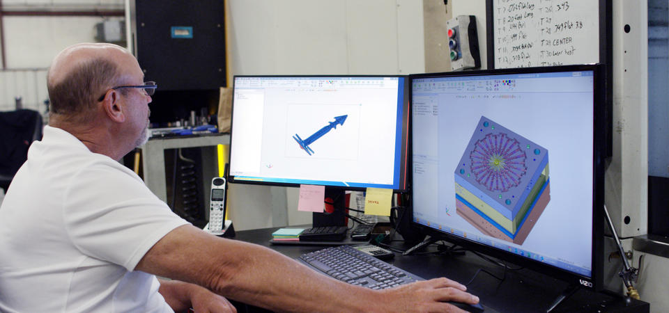
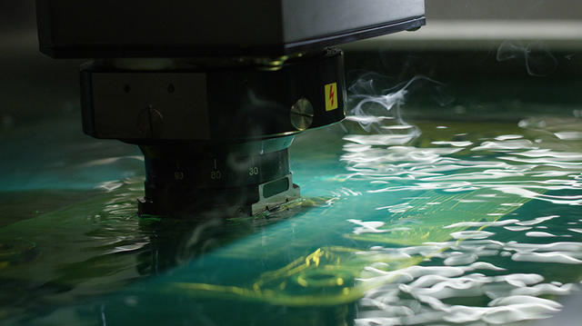
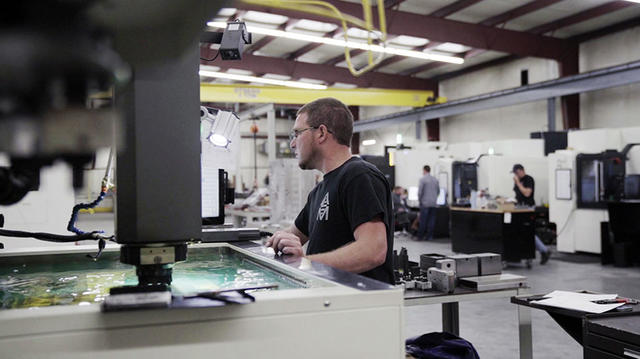
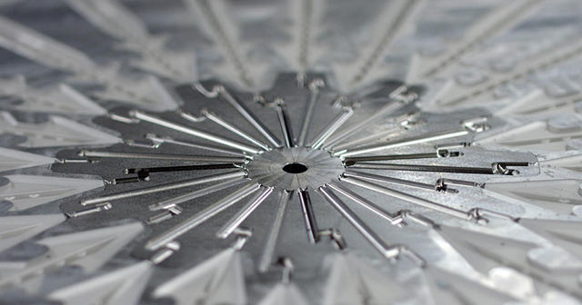
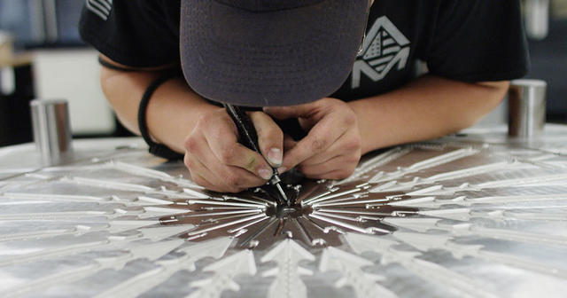

DEFI
Conserver un avantage concurrentiel en livrant rapidement des moules en plastique de haute qualité obtenus par injection.
SOLUTION
Logiciel intégré de CAO/FAO Cimatron® de Cimatron pour la conception et la fabrication de moules
RESULTATS
- Fabriquer des moules de qualité supérieure en 1 à 7 semaines, contre 10 à 14 semaines.
- Diviser par deux le temps de retrait et de gravure des électrodes (quelques heures au lieu de plusieurs jours).
- Accélérer le processus de coupe de façon spectaculaire.
- Rendre les nouveaux employés opérationnels plus rapidement (utilisation de Cimatron au bout d’1 à 2 semaines).
- Retour sur investissement la première année.
Allegiance Mold, LLC est un fabricant de moules en plastique obtenus par injection qui se spécialise dans la fourniture d’outillages pour prototypes et pour la production avec des délais courts. Basé à Portage, dans le Michigan, Allegiance Mold s’est créé une niche sur le marché de la fabrication des moules en produisant des moules complexes de haute qualité obtenus par injection deux fois plus rapidement que ses concurrents grâce au logiciel de CAO/FAO intégré Cimatron.
Conserver un avantage concurrentiel
Selon Ted Stender, PDG d’Allegiance Mold, le principal problème dans le secteur de la fabrication des moules est la concurrence à l’étranger. « Notre activité est restée nationale. Nous ne travaillons pas du tout avec l’étranger. Nous restons compétitifs grâce à nos délais. De nombreux ateliers d’outillage et de moules fabriquent des moules de haute qualité. Nous voulons fabriquer des moules de haute qualité rapidement afin de nous démarquer des autres acteurs du marché. »
Pour accélérer le processus de fabrication des moules sans sacrifier la qualité, vous devez vous doter de la technologie appropriée. Allegiance Mold avait besoin d'une solution logicielle dédiée à la conception et à la fabrication de moules pour compléter ses machines CNC et EDM à la pointe de la technologie.
Dave VanDeLaare, concepteur principal de moules chez Allegiance Mold, travaille dans le secteur de la fabrication de moules et utilise Cimatron depuis sa création en 1982. Le PDG, Ted Stender, utilise également Cimatron depuis qu’il a débuté dans le secteur en 1993. Lorsque ce dernier a décidé d’ouvrir un nouvel atelier à Portage, dans le Michigan, il ne s’est pas longtemps posé la question de savoir s’il continuerait d’utiliser ou non Cimatron. Chez Allegiance Mold, Cimatron est utilisé dans l’ensemble du processus de fabrication des moules – de l’établissement des devis à la conception des moules, en passant par la programmation de ses multiples machines EDM et CNC.
« La fabrication de moules exige une plate-forme puissante », explique M. Stender. « C’est exactement ce qu’est Cimatron. »

Tout est question de vitesse
Selon Ted Stender, Allegiance Mold apporte un avantage considérable à ses clients en matière de délais. « Là où la plupart des ateliers fabriquent des outils en 10 à 14 semaines, notre durée moyenne de fabrication d’outils est de cinq à sept semaines pour l’outillage de production et de une à trois semaines pour les prototypes, en fonction de la complexité du moule », explique M. Stender.
Interface unique et intégration CAO/FAO transparente
Ted Stender attribue une grande partie de l’agilité d’Allegiance Mold à l'utilisation de Cimatron. Outre les nombreuses fonctionnalités proposées par le logiciel, qui permettent de gagner du temps, le fait de disposer d’une interface unique simplifie considérablement le processus. « J’ai visité beaucoup d’autres ateliers et l’une de leurs plus grandes difficultés est liée à la multiplicité des plates-formes utilisées d’un site à l’autre », explique-t-il. L’utilisation de plusieurs solutions logicielles pour la conception et la fabrication de moules peut entraîner des problèmes tels que des erreurs de conversion et des retards dus aux allers-retours entre concepteurs et programmeurs.
En tant que solution intégrée de CAO/FAO, Cimatron dispose d'une interface unique. « Nous avons choisi Cimatron en raison de la fluidité de la productivité dans l'atelier, de la conception à l'usinage. Je pense qu'il permet de réduire considérablement les délais d'exécution. C'est une plateforme très puissante à avoir dans l'atelier », dit Stender.
L’un des principaux avantages de l’utilisation d’un système de CAO/FAO intégré pour la fabrication de moules tient à la disparition de la conversion et à la garantie que tout le monde travaille sur le niveau de révision le plus récent. Selon M. VanDeLaare, « Le principal avantage que je constate est que nous utilisons le même logiciel pour concevoir l’outil dans le bureau d’étude que pour l’usiner dans l’atelier. » Il ajoute que « l’entreprise utilise Cimatron pour la conception et l’usinage car il n’y a pas d’erreur de conversion. De mon bureau, le projet part directement en atelier et les gars peuvent entamer la programmation quelques minutes après seulement. C’est un gain de temps énorme. »
Conçu pour les fabricants de moules
Alors que de nombreux systèmes logiciels peuvent prendre en charge une partie de la fabrication des moules, Cimatron a été spécialement conçu pour gérer l’ensemble du processus. Selon Ted Stender : « Cimatron couvre toutes les opérations qu’un fabriquant de moules doit effectuer. C'est une solution globale. Et je pense que c’est ce qu’il y a de mieux pour fabriquer des moules. »
Cimatron a été conçu pour les fabricants de moules et c’est ce qui est particulièrement appréciable.
Des outils qui font gagner du temps lors de la conception de moules
Parmi les outils Cimatron que M. VanDeLaare trouve les plus utiles, figurent l’analyse d’ébauche et QuickSplit. Du point de vue du concepteur, ces deux outils sont extrêmement précieux », déclare-t-il.
« Lorsque l’outil QuickSplit est sorti, je n'avais encore rien vu de comparable. Le fait que le logiciel se charge lui-même de diviser la pièce sans avoir à intervenir manuellement fait gagner un temps incroyable au concepteur. »
VanDeLaare apprécie également le fait que la fonction de fractionnement de la silhouette de QuickSplit fait une grande partie du travail pour vous sur une surface radiale et vous donne votre plan de joint.
Allegiance Mold fait aussi bon usage de la fonction d’analyse des ébauches. « C'est fantastique pour la relation client », déclare M. VanDeLaare. « Nous pouvons prendre des photos avec l’outil d’analyse d'ébauche et montrer au client où se trouvent toutes les contre-dépouilles des pièces, indiquer comment les voir, et cela accélère la correction ».
« Sans l'analyse d'ébauche et les outils QuickSplit, ce serait une vraie galère », résume M. VanDeLaare.
Un autre outil Cimatron utile à Allegiance Mold est la simulation d'injection. M. VanDeLaare évoque un client en particulier qui, presqu'à chaque révision de la conception, commence par demander une simulation. « Il veut savoir comment se passe le remplissage ou savoir immédiatement s'il y aura des problèmes de pression. »
« Un grand merci à celui qui a développé cette fonctionnalité ; elle est très efficace dans le cadre de notre activité. »

Extraction rapide des électrodes
Une autre fonctionnalité essentielle de Cimatron est le module complémentaire QuickElectrode, qui, selon M. Stender, est un outil extrêmement puissant et précieux pour réduire de moitié le temps d’extraction et de gravure des électrodes. M. Stender ajoute que pour un travail classique, il est possible de retirer une électrode au bout de quelques heures au lieu de plusieurs jours. « C’est vraiment appréciable pour un atelier de moulage », dit-il.


Usinage plus efficace
Cimatron permet également de gagner du temps en atelier pour la programmation/usinage. Pour produire des pièces de haute qualité, les opérateurs des machines d’Allegiance Mold ont besoin de pouvoir contrôler la qualité de surface et l’outil, ce que permet de faire Cimatron. Par exemple, d’après Ted Stender, Cimatron est très utile pour fournir un poste de travail pouvant être utilisé dès le début de la conception et relié aux machines CNC et EDM, ce qui est très important pour la productivité.
En outre, Allegiance Mold a considérablement accéléré le processus de découpe en plaçant Cimatron à côté de chaque machine de l'atelier et en offrant des options aux programmeurs pour couper l'acier plus rapidement.
« Cimatron fournit de nombreux outils et options permettant de savoir comment couper ou usiner les pièces de façon à obtenir la même fonctionnalité, mais avec différentes options qui aident à jouer sur la rapidité. Vous pouvez déterminer la vitesse de chaque option et voir laquelle est la plus rapide », explique M. Stender. « En fin de journée, votre atelier sera plus efficace car vous aurez plus d'options. »
VanDeLaare précise que vous pouvez également ajuster le programme en regardant la machine tourner : « C'est un avantage de pouvoir le voir pendant que l'on usine ; non seulement pour la vitesse, mais aussi pour que nous soyons plus proches du travail. »
Investissement dans l’avenir
Les employés d’Allegiance Mold apprécient également la façon dont Cimatron investit dans l’avenir de la fabrication de moules en développant de nouvelles fonctionnalités intégrées aux nouvelles versions de Cimatron. « Chaque année, Cimatron propose des outils plus puissants et plus d’options. Chaque année, Cimatron rend Cimatron plus puissant et plus convivial », déclare Ted Stender.
Cimatron gagne sans cesse en rapidité et en puissance : vous gagnez plus de temps et vous êtes meilleur dans ce que vous faites.


Par exemple, de plus en plus de fabricants de moules se lancent dans les canaux conformes. Cimatron propose une fonction qui facilite la conception de canaux de refroidissement conformes. « Nous avons utilisé Cimatron pour réaliser plusieurs moules de canaux conformes. Les canaux conformes ont l’avantage d’offrir des cycles plus courts à nos clients », déclare M. Stender. Allegiance Mold commence à fabriquer des moules d'outillage de canaux conformes pour certains clients.
Facilité d'utilisation
Allegiance Mold est également ravi de la facilité d’utilisation et d’apprentissage de Cimatron. « Nos employés mettent peu de temps à se familiariser avec Cimatron », déclare Ted Stender. Il estime qu’un nouvel utilisateur peut être opérationnel sur Cimatron en un jour ou deux. « En une semaine ou deux, ils n’ont plus trop de problèmes à l’utiliser. »
Ted Stender trouve également les vidéos en ligne utiles. « Nous pouvons impliquer de nouveaux utilisateurs qui peuvent se former eux-mêmes à l'aide des tutoriels en ligne de Cimatron. Cela nous a été très utile. » M. VanDeLaare considère ce format avantageux car il est accessible et facile à suivre, et offre d'excellents résultats.
Cimatron est simple à utiliser, c’est pourquoi je le recommande.
Selon Stender : « Les gars de l'atelier adorent le Cimatron. Il leur facilite la vie. »
Support technique d'un expert
Utilisateurs de longue date de Cimatron, VanDeLaare et Stender sont très satisfaits de l'assistance technique et des réunions des groupes d'utilisateurs fournies par Cimatron. VanDeLaare a assisté à toutes les réunions des groupes d'utilisateurs de sa région.
Stender affirme que l'équipe d'assistance technique de Cimatron s'est montrée très professionnelle et serviable au fil des ans : « Si vous appelez, ils vous répondent rapidement. Nous ne les appelons pas vraiment beaucoup, parce que c'est assez explicite. »
M. VanDeLaare affirme également que les fonctions d'assistance à distance ont été très utiles. « Nous ne les avons pas beaucoup utilisées car nous ne rencontrons pas beaucoup de problèmes. Mais j'aime le fait qu'ils puissent accéder à votre ordinateur et qu'ils puissent voir ce que vous voyez lorsque vous êtes en train de le faire. C'est énorme ! »
Retour sur investissement
Selon M. Stender, l'investissement dans Cimatron a été plus que rentable ; Allegiance Mold a réalisé un retour complet sur investissement (ROI) dès la première année. Grâce à Cimatron, leurs employés et leur travail sont plus rapides. En les rendant plus rapides, il leur fait gagner de l'argent.
Stender conclut : « Cimatron est un élément essentiel de notre entreprise. Je ne peux pas imaginer diriger l'atelier sans lui. »
Le Cimatron est un élément clé de ce qui nous rend très compétitifs sur le marché.
« Le Cimatron fait tout ce dont nous avons besoin", déclare M. VanDeLaare. "J'ai fait mes débuts dans ce métier en dessinant au crayon, puis je l'ai vu évoluer jusqu'à la manipulation de modèles solides en 3D. Cimatron a été un excellent produit pour nous pendant de nombreuses années et je le recommande à tout le monde. »